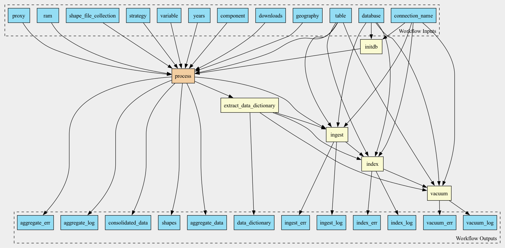

Pipeline to aggregate data in NetCDF format over given geographies

Workflow
Description
Workflow to aggregate pollution data coming in NetCDF format over given geographies (zip codes or counties) and output as CSV files. This is a wrapper around actual aggregation of one file allowing to scatter (parallelize) the aggregation over years.
The output of the workflow are gzipped CSV files containing aggregated data.
Optionally, the aggregated data can be ingested into a database specified in the connection parameters:
database.inifile containing connection descriptionsconnection_namea string referring to a section in thedatabase.inifile, identifying specific connection to be used.
The workflow can be invoked either by providing command line options as in the following example:
toil-cwl-runner --retryCount 1 --cleanWorkDir never \
--outdir /scratch/work/exposures/outputs \
--workDir /scratch/work/exposures \
pm25_yearly_download.cwl \
--database /opt/local/database.ini \
--connection_name dorieh \
--downloads s3://nsaph-public/data/exposures/wustl/ \
--strategy default \
--geography zcta \
--shape_file_collection tiger \
--table pm25_annual_components_mean
Or, by providing a YaML file (see example) with similar options:
toil-cwl-runner --retryCount 1 --cleanWorkDir never \
--outdir /scratch/work/exposures/outputs \
--workDir /scratch/work/exposures \
pm25_yearly_download.cwl test_exposure_job.yml
Inputs
Name |
Type |
Default |
Description |
|---|---|---|---|
proxy |
string? |
HTTP/HTTPS Proxy if required |
|
downloads |
Directory |
Local or AWS bucket folder containing netCDF grid files, downloaded and unpacked from Washington University in St. Louis (WUSTL) Box site. Annual and monthly data repositories are described in WUSTL Atmospheric Composition Analysis Group. The annual data for PM2.5 is also available in a Harvard URC AWS Bucket: |
|
geography |
string |
Type of geography: zip codes or counties Supported values: “zip”, “zcta” or “county” |
|
years |
int[] |
|
|
variable |
string |
|
The main variable that is being aggregated over shapes. We have tested the pipeline for PM25 |
component |
string[] |
|
Optional components provided as percentages in a separate set of netCDF files |
strategy |
string |
|
Rasterization strategy, see documentation for the list of supported values and explanations |
ram |
string |
|
Runtime memory, available to the process |
shape_file_collection |
string |
|
Collection of shapefiles, either GENZ or TIGER |
database |
File |
Path to database connection file, usually database.ini. This argument is ignored if |
|
connection_name |
string |
The name of the section in the database.ini file or a literal |
|
table |
string |
|
The name of the table to store teh aggregated data in |
Outputs
Name |
Type |
Description |
|---|---|---|
aggregate_data |
File[] |
|
data_dictionary |
File |
Data dictionary file, in YaML format, describing output variables |
consolidated_data |
File[] |
|
shapes |
array |
|
aggregate_log |
array |
|
aggregate_err |
File[] |
|
ingest_log |
File |
|
index_log |
File |
|
vacuum_log |
File |
|
ingest_err |
File |
|
index_err |
File |
|
vacuum_err |
File |
Steps
Name |
Runs |
Description |
|---|---|---|
initdb |
Ensure that database utilities are at their latest version |
|
process |
Downloads raw data and aggregates it over shapes and time |
|
extract_data_dictionary |
Evaluates JavaScript expression |
|
ingest |
Uploads data into the database |
|
index |
||
vacuum |